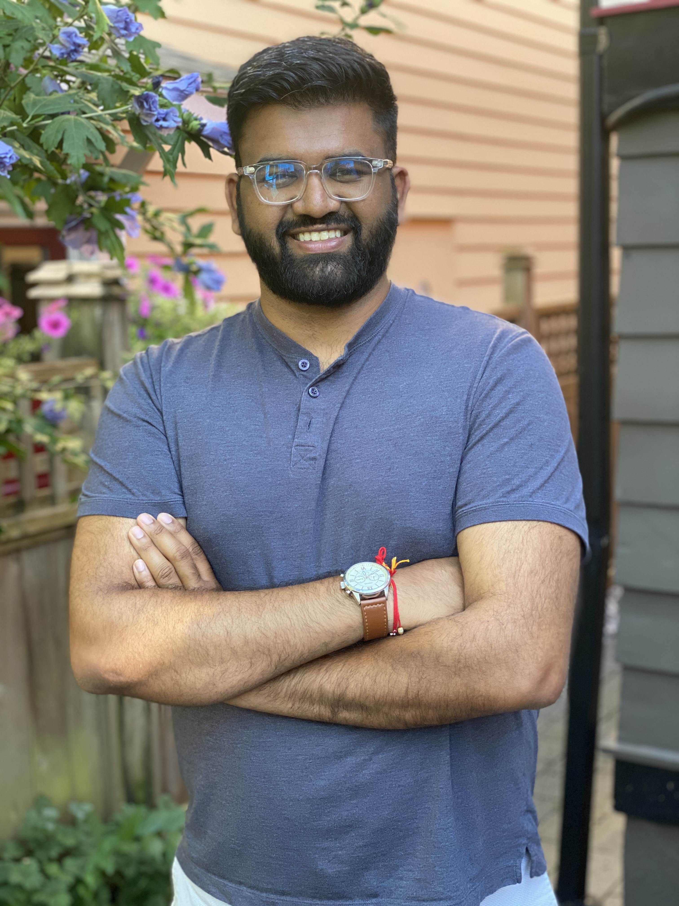

|  | I am a MD/PhD student at the University of British
Columbia (UBC) and an aspiring clinician-innovator. I have both a BASc (CPEN, '15) and MASc (BME, '17) from UBC.
I firmly believe in technology's benefits to improve the lives of patients and healthcare providers.
My PhD work focuses on developing intelligent renal ultrasound for chronic kidney disease and transplantation. My current research interests include ultrasound, artifical intelligence, and medical trainee education. My Master's work combined ultrasound, augmented reality and robotics, all applied to kidney cancer. Currently, I am a journal editor, a student affairs advisor, a concert go-er, and a novice screenplay writer. In the past, I have been a director for a medical innovation event, radio show host, nano-satellite developer, student team advisor, football coach, engineering club president, conference organizer, and more fun things.
I'm always interested in new projects, initiatives, and ideas. However, there is only so much time in a day. Feel free to reach out via e-mail. |